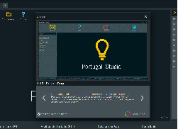

perguntas
Fluxogramas são diagramas visuais que representam a sequência de passos de um processo ou fluxo de trabalho. Eles usam uma variedade de símbolos padronizados e setas para mostrar as etapas, decisões e o fluxo de informações de maneira clara e concisa. A simbologia básica inclui oval/elipse para início e fim, retângulo para um processo/ação, losango para decisões, e paralelogramo para entrada/saída de dados.
Um algoritmo é uma sequência de instruções bem definidas, normalmente usadas para resolver problemas de matemática específicos, executar tarefas, ou para realizar cálculos e equações. A origem da palavra remete a Al Khowarizmi, famoso matemático árabe do século IX
Em programação, uma variável é um item de dados nomeado cujo valor pode ser alterado durante a execução de um programa, funcionando como uma caixa que pode guardar diferentes conteúdos. Já uma constante é um item de dados nomeado com um valor predefinido que não pode ser modificado após sua definição, permanecendo fixo durante todo o programa.
Os tipos de dados mais usados em algoritmos (Portuguol) são inteiro, real, caractere, cadeia (string), booleano e vetor. O tipo inteiro armazena números sem casas decimais, o real armazena números com casas decimais, e o caractere representa um único caractere. A cadeia armazena sequências de caracteres (texto), o booleano armazena os valores lógicos verdadeiro ou falso, e o vetor é usado para armazenar múltiplos valores do mesmo tipo em uma única estrutura.
Portugol é uma linguagem de programação fictícia usada para ensinar lógica de forma simples, pois utiliza comandos em português. Já o **Portugol Studio** é o programa onde esses algoritmos podem ser escritos, testados e executados, servindo como ambiente de aprendizado para iniciantes. 